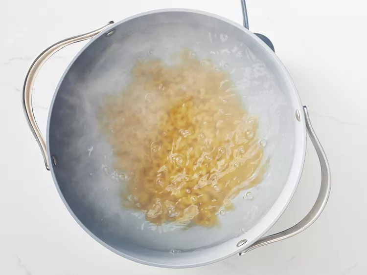

- Bring a large pot of lightly salted water to a boil. Cook elbow macaroni in the boiling water, stirring occasionally until cooked through but firm to the bite, 8 minutes.
- While the macaroni is cooking, go ahead and start on the roux. A roux is a thickening agent made of one part fat and one part flour that makes up the base of this creamy mac and cheese.
To make the roux, start by melting butter in a saucepan over medium heat. Add flour, salt, and pepper and stir until smooth. Slowly pour in milk and stir until the mixture is smooth and bubbling. Be careful to not let the milk burn.
- At the same time, melt butter in a saucepan over medium heat.
